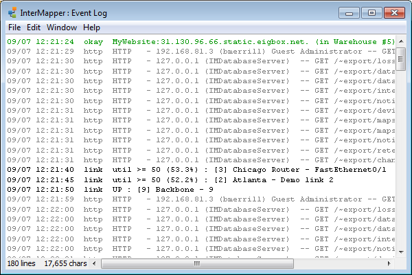

The Event Log
InterMapper writes information about
interesting events into event logs. These streams of information
are written to log files on-disk, and can be viewed in one of the Log
windows. The Event Log is a pre-defined log file which serves as a default
"catch-all" log file.
To open the Event Log window:
-
From the Windows Menu, choose Event Log
from the Logs submenu. The Event Log window appears, as shown below.

The main Event Log window. It can show
information about device ups and downs, high traffic on links, web, telnet,
and InterMapper RemoteAccess server connections, as well as error messages.
As entries are written to the Event Log file, (stored in the InterMapper
Settings/InterMapper Logs" folder) they are also placed at the bottom
of this window.
If the window is scrolled to the very bottom of the Event Log, it scrolls
automatically as new events are appended to the log.